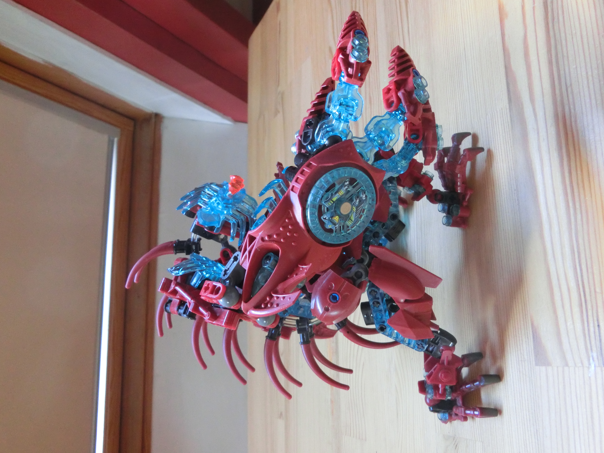
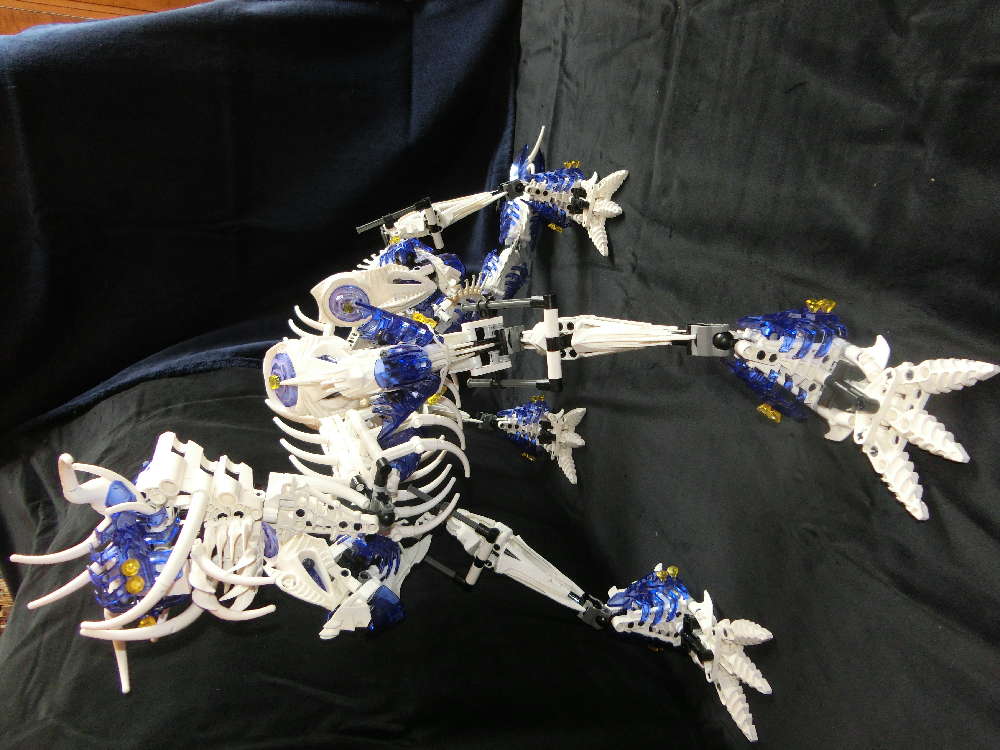
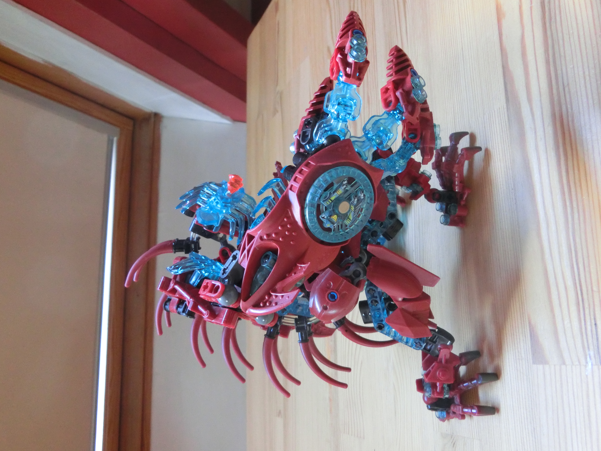
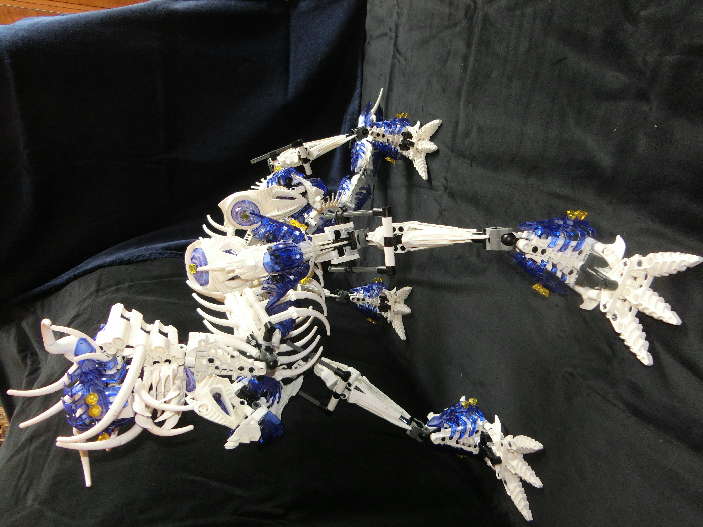

NL
An error occurred.
DE
Benjamin
Hallo, ik ben Benjamin. Online gebruik ik graag pseudoniemen Huichelaar en Goochem. Ik heb deze pagina geschreven als een soort autobiografie/blog.
Als groot fan van computerspelletjes heb ik een interesse ontwikkeld in programmeren en IT. Zo besloot ik een bachelor Informatica en een master Computer Science te doen. Daarna heb ik als freelance programmeur gewerkt en voor verschillende klanten mods (aanpassingen aan een videospel) gemaakt. Tijdens mijn studie en voor mijn werk heb ik veel geschreven in ARM assembly, C, C++ en Python. Ook heb ik ervaring in SQL en Java.
Dit ben ik in het kort, maar ik heb ook uitgebreider geschreven over mijn hobbies en projecten die ik gemaakt heb. Klik gerust op één van de links in het menu rechts om meer erover te weten te komen. Hoe dan ook, bedankt voor het lezen en fijne dag!
Benjamin
Hello, I'm Benjamin. I like to go by pseudonyms Huichelaar & Goochem online. This page was written as an autobiography and to highlight some of my works.
Being a big fan of computergames, I developed an interest in programming & IT. As a result, I graduated with a bachelor's and master's degree in Computer Science. After my studies I also spent time working as a freelance programmer writing mods (modifications to videogame(s)) on commission. During my time at uni I mainly worked in C, C++ and Python. I've also got experience writing in Java & SQL. As a modder, I also worked with ARM assembly.
I've written in more detail about my hobbies and personal projects. You can read more about these by clicking on the links in the menu to the right.
Benjamin
Hallo, mein Name ist Benjamin. Im Internet benütze ich oft die Pseudonyme Huichelaar und Goochem. Diese Webseite sollte fungieren als meine Biografie/Blog.
Weil ich ein größer Anhänger der Videospiele bin, hab ich mich ausgebildet in Informatik. Ich habe ein Bachelordiplom in Informatik und ein Masterdiplom in Computer Science. Ich hab auch als freier Mitarbeiter Aufträge gebaut für Kund(inn)en. Diese Aufträge enthalten Anpassungen machen an Videospielen. Für die Arbeit und die Ausbilding hab ich programmiert in ARM assembly, C, C++ und Python. Ich hab auch Erfahrung mit SQL und Java.
Das bin ich in dem Kürzen zusamengefasst. Ich habe aber noch Weiteres geschrieben über meine Hobbys und Projekte. Drücken Sie auf einer des Linkes im Menü rechts um hierüber mehr zu lesen. Danke für's lesen und schönen Tag!
Spellen
Ik loop altijd warm voor borspelletjes. Zeker als er een mix van strategie en geluk in zit. Bordspellen waar ik nu helemaal aan verkocht ben, zijn:

Splendor. Een spel waar je goed moet bijhouden wanneer het tijd is om over te gaan van het opbouwen van inkomen naar het binnenhalen van punten. Begin hier te vroeg of te laat aan en voor je het weet heeft iemand anders in een korte periode veel punten binnengehaald.

Catan. Met name de steden & ridders uitbreiding. Hierbij is bijna alles in flux: Van alles wat je hebt, weet je nooit zeker of je het behouden mag. Langste handelsroute? Misschien wordt die de volgende beurt weer afgepakt door een andere speler uitgerekend met behulp van een intrige-ontwikkelingskaart. Mooie stad geplaatst en Catan vol met geactiveerde ridders? Misschien gaat die andere speler nou net expres zijn/haar ridders gebruiken, hopend dat de barbaren aanvallen, en jij jouw stad verliest. De manieren waarop je elkaar kan jennen zijn eindeloos!

Wingspan. Wat mij aanspreekt in dit spel is de mogelijkheid om heel vroeg een strategie te plannen a.d.h.v. de kaarten die je getrokken hebt en deze strategie over het hele spel stapsgewijs uit te voeren. Zelfs als je verliest, voelt het niet onprettig wanneer je toch je plan hebt kunnen uitvoeren. Ook zijn er maar weinig mogelijkheden voor andere spelers om jou te belemmeren, wat toch voor een zekere gerustheid zorgt.
Games
Who's up for a game? I enjoy a good mix of strategy and luck in a board game. Games I'm currently game for:
Splendor. This game starts slow but can end very suddenly. You need to closely balance short & long-term interests so you don't get left behind. You can't immediately go for big points, but you also can't endlessly amass resources before spending them on points.
Catan, specifically the Cities & Knights expansion. There are so many ways to badger and hinder your opponents. Nearly none of your resources are safe. You need to be mindful of every action you take and in which way someone might use it against you. Think Catan is safe against barbarians? Maybe that other player with a bunch of activated knights decides to deactivate them to specifically make you lose a city! Got the longest-running road with room to spare? Maybe that one opponent will build a road perpendicular to the middle of yours and place a knight, cutting your road's length in half, putting you on the back-foot!
Wingspan. On the other end of the spectrum is this game where the only concern you'll have is whether you'll maybe receive a bonus card or piece of food from other players. Wingspan is all about finding a strategy that synergizes the different birds available to you. Disruption from other players is minimal. Even when you lose, it hardly feels bad at all as you at least got to execute your strategy.
Brettspiele
Ich mag Brettspiele sehr. Wichtig dabei ist das mit Glück und Strategie gewinnen kann. Im Moment bin ich sehr begeistert von:
Splendor. In diesem Spiel müssen Sie erstens ein Einkommen aufbauen und danach einkaufen. Dabei ist es wichtig gut an zu fühlen wann es Zeit ist um zu steigen von aufbauen nach einkaufen. Wenn Sie zu spät einkaufen kann jemand anders schon viele Punkte geholt haben!
Catan. Besonderes die Städte & Ritter erweiterung. In diesem Spiel können Sie Sie nie sicher fühlen. Fast alles kann Ihnen entnommen werden. Dagegengestellt können Sie auch sehr vieles von Ihren Mitspieler(inn)en klauen. Alles im Auge behalten ist die größte Herausforderung Catans.
Wingspan. Bei Wingspan haben Sie die Möglichkeit in einem frühe Stadium eine Strategie über eine ganz lange Zeit zu entwickeln. Dabei können deine Mitspieler(inn)en Sie kaum behindern. Der große Vorteil dabei ist das Verlieren nicht unbedingt schlimm fühlt da Sie wenigstens Ihre Strategie ausführen könnten.
Modelbouw
Maar eigenlijk is het enkel LEGO. Ondertussen is het alweer een kwarteeuw sinds LEGO BIONICLE begon en bijna een decennium sinds LEGO dit thema stillegde. Dat heeft fans zoals mij niet ervan weerhouden om onze eigen ontwerpen te maken en uit te bouwen.
Voor mij begint een ontwerp meestal met een idee van een kleurencombinatie. "Hoe ziet metaalgroen met transparant donkerblauw eruit? Welke onderdelen in deze kleuren zijn er en op welke manieren kan ik deze onderdelen samenvoegen?" Op BrickLink ga ik de database met alle LEGO onderdelen en in welke kleuren ze uitgebracht zijn na.
Daarna probeer ik zo goed als het lukt met de onderdelen die ik in huis heb het bouwsel te bouwen. Dan bouw ik het werk in LEGO Digital Designer zodat ik weet welke onderdelen ik precies nodig heb. Tenslotte bestel ik de onderdelen die ik nog niet heb (of waarvan ik ze wel heb, maar in de verkeerde kleur) via BrickLink.
En wanneer ik alle onderdeeltjes ontvangen heb, begint het leukste gedeelte van het proces: Het in elkaar bouwen van het ontwerp!
 



Modelbuilding
Though actually, it's all LEGO. It's been nearly 25 years since LEGO BIONICLE first released and nearly ten since LEGO ended its production. That didn't stop fans like me to create and build our own designs.
The first step in the design for me is the inspiration I get from a colour-combination. "What if I were to mix metallic green with transparent dark blue? Which parts come in these colours and how can I combine them into a cohesive structure?" By referencing the parts-database on BrickLink I can form the first contours of a plan.
Then, with the parts that I do own, I'll try to build out different parts of the final model. I'll then repeat that process as best I can in Lego Digital Designer, tracking which parts I lack, including parts I do own, but not in the right colour.
Next up, I order the parts off BrickLink and wait patiently for the parts to arrive. Arguably the hardest part.
Finally, once all parts have come in, the fun bit begins: I get to build the design!
Modellbau
Aber eigentlich rede ich nur von LEGO. Inzwischen ist es schon wieder ein Vierteljahrhundert her als LEGO BIONICLE angefangen hatt und fast ein Jahrzent seit LEGO diese Subgruppe beendet hatt. Dennoch machen Fans, so wie ich, noch immer unsere eigene Entwürfe und bauen die nach.
Wenn ich etwas neu entwerfe, fang ich an mit einer Kombination zwei Farben. "Wie gut funktionieren Metallisch-grün und Transparentdunkel-blau zusammen? Welche Teile gibt es in diese Farben und auf welche Art und Weise kann ich diese Teile zusammenfügen?" Dann schlag ich BrickLink's database nach um ein übersicht von häufige Teile zu bekommen.
Nächstens versuch ich so gut wie möglich mit Teile die ich Zuhause habe mein Entwürf aus zu bauen. Demnächst bau ich den Entwurf in LEGO Digital Designer wodurch ich ein klaren Überblick habe welche Teile ich noch brauche, bevor ich die bestelle über BrickLink.
Schließlich wenn alle Teile angekommen sind, fängt der beste Moment an: ausbau des Entwurfes!
Verzamelen
Tot nu toe komt verzamelen voor mij voornamelijk neer op Pokémon kaarten. De nieuwe kaarten uit mijn jeugd die ondertussen vintage worden (+20 jaar sinds eerste druk!) zijn voor mij het interessantst. Zo ben ik groot fan van uitbreidingen zoals EX Team Magma vs Team Aqua, EX Rocket Returns en de Delta Species uitbreidingen.
Ook recente callbacks naar deze uitbreidingen spreken mij zeer aan. Denk aan Mimikyu Delta Species, de Team Rocket kaarten van Destined Rivals, en zelfs (met één oogje dichtgeknepen) de Terastallized Pokémon kaarten (Terastallized Electric Tyranitar ex, dat moet toch een knipoog zijn naar Delta Species Electric Tyranitar ex!?)


Collecting
Collecting mostly comes down to Pokémon cards for me. Those hot and new cards from my childhood are now reaching vintage status (20+ years since first print!) and are becoming harder to obtain. Alas, I'm a big fan of these older expansions, such as EX Team Magma vs Team Aqua, EX Rocket Returns and the Delta Species expansions.
That said, recent callbacks to these expansions also appeal to me. Cards such as Mimikyu Delta Species, the Team Rocket cards of Destined Rivals and even (perhaps a bit of a stretch) the Terastallized Pokémon cards. I mean, Terastallized Electric Tyranitar ex has to be a reference to Delta Species Electric Tyranitar ex, right!?
Sammeln
Bisher heißt sammeln für mich eigentlich nur Pokémonkarten anhäufen. Die damals neuen Karte aus meine Jugend werden inzwischen altmodisch (+20 Jahre seit der ersten Druck!) Doch (oder vielleicht deswegen) sind diese Karten meine Favoriten; Ich bin ein großer Fan von Sets wie EX Team Magma vs Team Aqua, EX Rocket Returns und die Delta Species Sets.
Sonst hab ich auch viel Liebe für neue(re) Karten die verweisen an diesen älteren Sets. So gibt es Mimikyu Delta Species, die Team Rocket Karten von Destined Rivals und auch einige Terastallized Pokémonkarten. Terastallized Electric Tyranitar ex muss ja eigentlich doch ein Verweis an Delta Species Electric Tyranitar ex sein!?
Pilaren
Pilaren is een puzzel-videospel dat ik geschreven heb voor de Gameboy Advance (GBA), een spelcomputer dat Nintendo uitbracht rond 2001-2004. Pilaren is geen commercieel product, maar een poging van mij om een spel uit grotendeels niets te bouwen. Ik had vóór dit project al mods (aanpassingen) gemaakt voor bestaande GBA videospellen en wilde weten hoe het zou zijn om een eigen spel te maken. (I.p.v. gebruik te maken van een spel's sound mixer, wat als ik er zelf één wil bouwen? Die sound mixer is er nog niet van gekomen, oeps!)
Ik heb Pilaren kunnen bouwen m.b.v. van tonc (een tutorial voor het bouwen van GBA videospellen) en no$gba (een debugger met een geweldige user interface). De puzzels die je oplost in Pilaren zijn gebaseerd op een puzzel uit RuneScape (Elemental Workshop IV. JaGeX, als je dit leest, geef ons alsjeblieft Elemental Workshop V!)
Hieronder is een aangepaste versie van Endrift's gbajs waarop je Pilaren kan spelen mits je een toetsenbord paraat hebt. Druk op "AAN/UIT" om het spel op te starten.
Pilaren
Pilaren is a puzzle videogame I wrote for the Gameboy Advance (GBA), a videogame console released by Nintendo back in 2001-2004. Pilaren is not a product released on a market, but my attempt to build a videogame from scratch (a process also known as homebrewing). Prior to this project I had developed several mods for existing GBA videogames and this made me curious about making a game from scratch and the challenges that would present. For example, what's it like to build a sound mixer instead of simply using a videogame's existing sound mixer? (That personal sound mixer never came to be, woops!)
I couldn't have built Pilaren without resources such as tonc (a tutorial for developing software on GBA) and no$gba (a GBA debugger with a fantastic user interface). The puzzles presented by Pilaren are based on a puzzle in RuneScape, specifically the Elemental Workshop IV quest (JaGeX, if you're reading this, please give us Elemental Workshop V!)
I've made some edits to Endrift's gbajs and am running an instance of this version of gbajs below this paragraph. If you press "POWER" gbajs will run Pilaren and you'll be able to play the game, assuming you've got a keyboard connected to your device.
Pilaren
Pilaren ist ein Videospiel das ich gebaut habe für den Gameboy Advance (GBA), ein Videospielgerät das zirka 2001 bis 2004 verkauft wurde. Pilaren ist aber kein kommerzielles Produkt, sondern mein Versuch ein ganzer Videospiel von Anfang an zu bauen. Bevor diesen Projekt hatte ich schon Mods (Änderungen) gebaut für GBA Videospiele und habe so die Neugier entwickelt selber ein Videospiel zu bauen. Wie ist es, z.B., selber ein Soundmixer zu bauen?
Mit Hilfe von tonc (ein online Lehrbuch für das Bauen GBA Videospieles) und no$gba (ein debugger mit einem fantastischen Benutzerinterface) hab ich Pilaren bauen können. Die Puzzles die Sie lösen in Pilaren sind basiert auf ein Puzzle in RuneScape (Elemental Workshop IV).
Unter dieser Zeile gibt es eine modifizierte Edition von Endrift's gbajs. Auf gbajs können Sie Pilaren spielen falls Sie eine Tastatur mit Ihrem Gerät verbundet haben. Drücken sie auf "EIN/AUS" um Pilaren zu starten.
DigitalBinder
Ik verzamel dus graag Pokémon kaarten, maar ik weet nou niet van te voren hoe ik ze goed zou kunnen weergeven in een album. Zou het niet handig zijn om virtueel een album in te kunnen vullen om zo te zien welke kaarten nou waar passen? En welke nergens passen, zodat ik die niet koop, om te laat te ontdekken dat ik ze nergens plaatsen kan!
Nou, ik zal wel niet de eerste zijn met dit idee, maar helaas kon ik niet een virtueel album programma vinden wat naar mijn wensen werkte. Dus heb ik DigitalBinder gebouwd in Python. Hierbij heb ik ook wat kunnen leren van tkinter, een library/package voor het maken van user interfaces.

DigitalBinder
So I like to collect Pokémon cards, but organising them in a binder is a different beast. Organising and re-organising cards into binders as they enter my collection leaves in opportunities for the cards to get damaged, and I won't know how well cards fit together in a binder until I've placed them, so to solve this issue I wrote DigitalBinder.
DigitalBinder allows the user to construct and organise a virtual card-binder. This can assist the user in deciding which cards best go where and which cards would not fit their collection. I wrote DigitalBinder in Python. This also provided me with the opportunity to learn more about the tkinter library/package for graphical user interfaces.
DigitalBinder
info DE text: Lorem.
SpaceInvaders
Om wat meer oefening te krijgen in Object Oriented Programming heb ik een implementatie van het videospel Space Invaders geschreven in Python.
SpaceInvaders
In order to get some extra practice in Object Oriented Programming, I wrote a rudimentary Python implementation of the Space Invaders videogame.
SpaceInvaders
info DE text: Lorem.